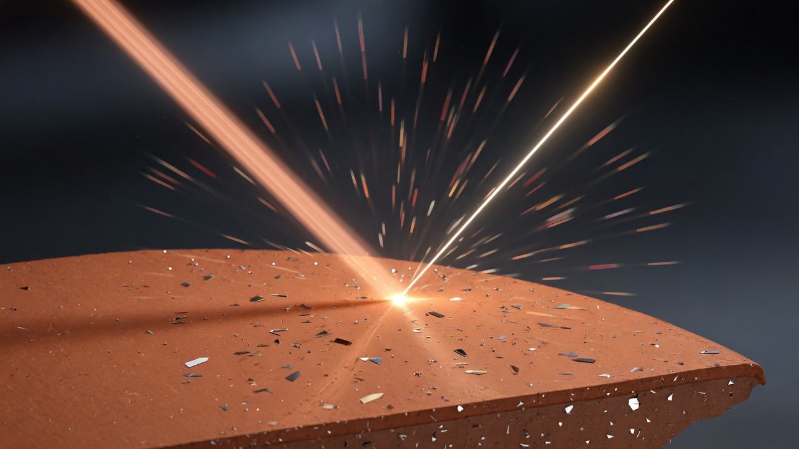
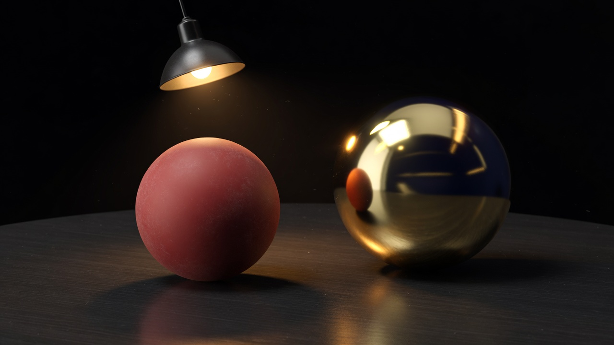
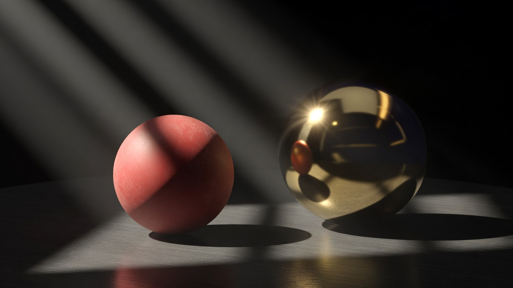

Dielectric
Plastic, wood, paint, stone. Light mostly enters, scatters among pigments, and comes back out colored.
baseColor is albedo. Head-on, 4 % reflects as white (f0 = 0.04, from index of refraction 1.5).
Human explainer · RTXDI + RTXGI + OMM + DLSS-RR
Part I builds the shading of a single surface point from glTF data, one symbol at a time. Every graph and scene on this page evaluates the same formulas the engine runs. Part II shows where RTXDI, RTXGI NRC, opacity micromaps and DLSS-RR sit in the frame, and what each one reads and writes. The engine targets NVIDIA RTX GPUs only.
Part I
Inputs: a surface point, the direction to the camera, a light. Output: how much light leaves toward the camera.
In one lineOutgoing light = self-glow + for each light (how the surface redirects it × how bright it arrives × how squarely it hits).
Lo = emissive + Σlights f(V, L) · Li · NdotL
| Symbol | What it is | Plain |
|---|---|---|
N | unit surface normal, after the normal map and the double-sided flip | which way the surface faces |
V | unit vector to the camera | where you look from |
L | unit vector to the light | where the light comes from |
H | normalize(L + V) | the tilt a tiny mirror needs to bounce L into V |
f | BRDF, units 1/sr | the share of light from L that leaves toward V |
Li | light arriving at this point | how bright the lamp is here |
NdotL | max(N·L, 0) | a grazing beam spreads over more area |
Move the light and the camera. H sits halfway between them. The specular highlight peaks when H lines up with N.

f describes.
Most light entering a dielectric scatters inside and leaves as a wide colored fan: the diffuse lobe.
A fraction F bounces off the surface as a narrow specular lobe around the mirror direction.
The glints are microfacets. Roughness measures how widely their normals spread.
The engine evaluates f in ray-traced passes (material.brdf). There is one implementation, and every pass calls it.
In one lineMetals have no diffuse and colored reflections. Everything else has colored diffuse and a 4 % white reflection.
Plastic, wood, paint, stone. Light mostly enters, scatters among pigments, and comes back out colored.
baseColor is albedo. Head-on, 4 % reflects as white (f0 = 0.04, from index of refraction 1.5).
Gold, iron, chrome. Light does not enter, so there is no diffuse at all. The color is the reflection.
baseColor is f0. Gold ≈ (1.00, 0.77, 0.34), chrome ≈ (0.55, 0.55, 0.55).
glTF blends the two with one scalar, metallic. The blend collapses into three shader inputs:
c_diff = baseColor · (1 − metallic) // metals: no diffuse f0 = lerp(0.04, baseColor, metallic) // metals: colored reflection α = roughness² // GGX uses α, not roughness

c_diff dominates). The gold metal has no diffuse. You see the lamp and the room as tinted reflections (c_diff = 0).(1 − 0.04). Energy balance comes from the (1 − F) on the diffuse term (§7).In one lineFactors × textures × vertex color, with each texture in its own color space and channel.
baseColor = baseColorFactor · sample_srgb(baseColorTexture) · COLOR_0 metallic = saturate(metallicFactor · sample_linear(metallicRoughnessTexture).b) roughness = saturate(roughnessFactor · sample_linear(metallicRoughnessTexture).g) emissive = emissiveFactor · sample_srgb(emissiveTexture).rgb ao = 1 + strength · (sample_linear(occlusionTexture).r − 1) // 1 without a map
| Texture | Color space | Channels used | GPU format |
|---|---|---|---|
baseColorTexture | sRGB rgb, linear a | albedo or metal f0. a = coverage | *_SRGB |
metallicRoughnessTexture | linear | B = metal, G = rough. R and A ignored | *_UNORM |
normalTexture | linear | rgb tangent-space normal, OpenGL +Y | *_UNORM |
occlusionTexture | linear | R only | *_UNORM |
emissiveTexture | sRGB | rgb | *_SRGB |
pbrMetallicRoughness means metallic = 1, roughness = 1, white. That is a rough white metal, nearly black without indirect light. It is spec-correct, not a loader bug. Try the “glTF default” preset in §8.Texel [64, 124, 231, 255] with factor [0.2, 1.0, 0.7, 1.0] decodes to linear [0.051, 0.202, 0.799, 1], so baseColor ≈ [0.010, 0.202, 0.559, 1]. Lighting sRGB values directly gives grey metals and neon plastics.
Authors often put AO in the unused R of the metal-rough image and reference that image twice. Core glTF never reads R on the metal-rough slot. The engine stores UVs as v′ = 1 − v for Vulkan.
In one lineEvery material becomes a mirror at grazing angles. f0 sets only the head-on value.
F(f0, VdotH) = f0 + (1 − f0) · (1 − VdotH)5
At VdotH = 0.5 a dielectric reflects 7 %, still mostly diffuse. At 0.2 it reflects 35 %. That is the wet sheen at a glancing view.
In one lineArtists paint perceptual roughness. GGX wants α = roughness² so the slider feels even.
hover the plot
| roughness | α | Looks like |
|---|---|---|
| 0 | 0 | perfect mirror |
| 0.2 | 0.04 | polished metal, clear coat |
| 0.4–0.5 | 0.16–0.25 | satin, brushed |
| 1 | 1 | chalk: wide, dim highlight |
In one lineD counts facets aimed at H. V removes the ones hidden from light or camera.
a2 = α² D = a2 / (π · (NdotH² · (a2 − 1) + 1)²) // peak 1/(π α²) at H = N V = 0.5 / (NdotL·√(NdotV²(1−a2)+a2) + NdotV·√(NdotL²(1−a2)+a2)) // height-correlated Smith f_specular = F · D · V
Radius is D normalized to its peak. Smooth is a needle, rough is nearly a hemisphere. The energy is the same, spread wider, so each direction is dimmer.
V already contains the BRDF’s 1/(4·NdotL·NdotV). The light loop still multiplies by the rendering-equation NdotL, once. Drop it and grazing lights are too bright. Double it and they are too dark.G1(x) = 2x / (x + √(α² + (1 − α²)x²)) f_specular = F · D · G1(NdotL) · G1(NdotV) / (4 · NdotL · NdotV)
Any D/G pair is allowed. The inputs c_diff, f0, α must match Appendix B.
In one lineDiffuse is c_diff/π, scaled by whatever Fresnel did not reflect.
f = (1 − F) · c_diff / π + F · D · V
cos θ over the hemisphere gives π, so f = 1/π. (1 − F) is the energy the specular lobe did not take.Li = 1, all dots = 1| Material | c_diff | f0 | α | D | f · NdotL |
|---|---|---|---|---|---|
| white plastic, r 0.5, base 0.8 | 0.8 | 0.04 | 0.25 | 5.09 | 0.295 |
| gold, r 0.1 | 0 | gold | 0.01 | 3183 | ≈ 796 · f0 (tight spike) |
| glTF default (m 1, r 1, white) | 0 | 1 | 1 | 0.318 | 0.080 (dim grey) |
| dark rubber, r 1, base 0.05 | 0.05 | 0.04 | 1 | 0.318 | 0.0185 |
In one lineThree sliders drive the whole BRDF. Drag the sphere to move the light.
| Want | metallic | roughness | baseColor |
|---|---|---|---|
| chrome | 1 | 0–0.1 | ≈ (0.55, 0.55, 0.55) |
| gold | 1 | 0–0.2 | ≈ (1.00, 0.77, 0.34) linear |
| brushed iron | 1 | 0.3–0.5 | ≈ (0.56, 0.57, 0.58) |
| glossy plastic | 0 | 0.2–0.4 | albedo |
| matte paint | 0 | 0.6–0.9 | albedo |
| rubber, asphalt | 0 | 0.9–1 | dark albedo |
Painted metal is dielectric paint (metallic = 0), with bare-metal texels only where the paint is chipped.
In one lineNone of these is a BRDF lobe. They change N, scale indirect light, add glow, or cut holes.
n = sample_linear(normalTex).xyz · 2 − 1 n = normalize(float3(n.xy · scale, n.z)) B = cross(N, T) · tangent.w N = normalize(T·n.x + B·n.y + N·n.z)
OpenGL +Y. Never flip Y. A file without tangents gets MikkTSpace-compatible ones generated at load, so a normal map always has a tangent frame.
ao scales indirect light only (RTXGI in §15). The sun still reaches a crack that faces it.
In a lights-only view, a correct AO map looks ignored.
Added after lighting. It is not scaled by NdotL or AO. Factor ≤ 1 in core. HDR needs KHR_materials_emissive_strength.
OPAQUE ignores a. MASK cuts at alphaCutoff (0.5 by default). BLEND is straight-alpha over after lighting. Never premultiply before the BRDF.
In the engine, the G-buffer pass cuts MASK exactly with discard. Shadow and bounce rays use opacity micromaps (§13).
doubleSided: no culling, and N = −N on back faces before the BRDF.
In one lineThe three light types only change how L and Li are built. The BRDF is the same.
Li = color · intensity · distanceAttenuation · coneAttenuation
| Type | L | intensity | Attenuation |
|---|---|---|---|
| directional | −worldDir (node −Z) | lux | 1 |
| point | normalize(lightPos − P) | candela | window(d) / d² |
| spot | same as point | candela | point × cone |
A small ray tracer running the page’s BRDF, with hard shadows. Rubber on the left (m 0, r 0.85), gold on the right (m 1, r 0.18). The photo is a real-world reference for the same setup. Turn indirect off to see pure punctual lighting: the gold goes black except for the highlight, because a metal only shows what it reflects.

attenuation = window(d) / max(d², 1e-4)
window(d) = range == 0 ? 1 : saturate(1 − (d / range)⁴) // exactly 0 at d ≥ range
cd = dot(spotDir, −L) // +1 on the axis
scale = 1 / max(0.001, cos(inner) − cos(outer))
offset = −cos(outer) · scale
cone = saturate(cd · scale + offset)²
L points toward the light and spotDir points away from it, so on-axis dot(spotDir, −L) = +1. Writing dot(spotDir, L) turns the hot spot black and lights a ring.Lo = emissive
for each node-attached light:
(L, Li) = evalLight(light, P)
if NdotL ≤ 0: continue
Lo += evalBrdf(V, L) · Li · NdotL · visible(P, L)
Exposure belongs to the engine. A 1 cd point light at 1 m on white Lambert gives 1/π ≈ 0.32 nits, far below SDR white.
Part II
Part I shaded one point. A frame needs about 8 million of them, plus shadows, bounced light, and a clean image from very few rays. Four NVIDIA SDKs do that work, and the engine only writes the glue each one asks for.
In one lineRaster the first hit into a G-buffer, then RTXDI adds direct light, RTXGI NRC adds bounced light, and DLSS-RR denoises and upscales.
Boxes link to their section. Every lighting pass is a compute shader with ray queries, and every ray traces the same TLAS.
| Concern | Owner | The engine writes |
|---|---|---|
| direct light | RTXDI (ReSTIR DI) | RAB_* bridge, light buffer, two compute entry points |
| indirect light | RTXGI NRC (Neural Radiance Cache) | one path loop (update + query variants), one combine pass, host train/infer/resolve calls |
| alpha-tested rays | OMM SDK + VK_EXT_opacity_micromap | load-time bake, micromap build, attach to BLAS |
| denoise + upscale | DLSS-RR (NGX) | guide images, host evaluate |
evalBrdf from §7. When they disagree, it is a bug. There is no reference light loop, homegrown cache, or custom denoiser to compare against, and no vendor fallback path.In one lineThe rasterizer writes the first-hit surface once. Rays use standard KHR acceleration structures built from the same vertex and index buffers.
RTXDI, NRC and DLSS-RR all start from the surface the camera sees. The engine already draws meshes with mesh shaders and device-generated commands, so that pass writes a G-buffer: the BRDF inputs of §3 per pixel, not a lit color. Alpha testing there is an exact discard at the cutoff.
| Image | Content | Read by |
|---|---|---|
| depth | hardware depth | RTXDI, NRC paths, DLSS |
normalRoughness | world shading normal, perceptual roughness | RTXDI, NRC paths, DLSS |
geoNormal | geometric normal | ray origin offset |
diffuseAo | c_diff, ao | RTXDI, NRC paths, DLSS diffuse albedo |
specularF0 | f0 | RTXDI, NRC paths |
specAlbedo | pre-integrated f0 at NdotV | DLSS specular albedo |
emissive | emissive (unlit: baseColor) | noisy_color |
motion | pixels, current → previous | RTXDI temporal reuse, DLSS |
The engine keeps two G-buffers and swaps them every frame. RTXDI’s temporal reuse reads last frame’s surface to check that a reused light sample still belongs to a similar surface.
| Event | BLAS | TLAS | RTXDI light buffer |
|---|---|---|---|
| load an asset | build one per primitive (with its OMM), grouped per model | new instance rows | new light rows |
| unload an asset | destroy that model’s group; the others stay valid | its rows disappear | its lights disappear |
| object moves or rotates | — | rewrite its rows, rebuild | rewrite lights attached to it |
| nothing changes | — | rebuild anyway (cheap) | — |
GpuRayInstance row with the current entity and primitive. At a ray hit, CommittedInstanceIndex() picks that row, which leads to the model’s slices and the primitive’s material, and CommittedPrimitiveIndex() gives the triangle. Three indices from the model’s index slice then give the vertices to interpolate. The same sampleMaterial runs at the hit as in the G-buffer fragment shader.A camera ray and a rasterized pixel find the same surface. Raster already exists here, gives exact alpha edges with discard, and needs no ray-tracing pipeline or shader table. Every remaining ray (shadow, bounce) is a ray query in a compute shader.
DLSS needs the raster to be jittered by a sub-pixel offset each frame. Motion vectors are computed from the unjittered positions, and DLSS receives the jitter separately.
In one linePre-classify tiny pieces of alpha-tested triangles, so shadow and bounce rays pass through leaf holes without running any shader.
A leaf card is two triangles with an alpha texture. Without help, a ray touching the card has to stop, fetch UV, sample alpha and compare to the cutoff. An opacity micromap splits each triangle into 4level micro-triangles, each marked opaque, transparent, or unknown. Traversal handles opaque and transparent in hardware.
| Ray | Alpha handled by | Why |
|---|---|---|
| camera (first hit) | raster discard in the G-buffer pass | exact edges where you look at them |
| shadow, bounce | OMM, forced 2-state per instance | no shader runs during traversal. A slightly wrong edge is invisible in a soft shadow |
FORCE_OPACITY_MICROMAP_2_STATE folds unknown into opaque or transparent at trace time. Instances without a micromap are FORCE_OPAQUE, so a ray query never sees a candidate it would have to alpha-test. The “any-hit calls” stat shows what 4-state tracing would cost.In one lineTry a few random lights, keep the most promising one, and borrow good picks from neighbors and from last frame.
The §10 loop costs one BRDF evaluation and one shadow ray per light per pixel. A scene with 300 lamps makes that 300 rays per pixel. Picking one light at random is cheap but very noisy. RTXDI (ReSTIR DI) sits between the two:
M candidate lights, weight each by its unshadowed contribution p̂ = luminance(f · Li · NdotL), and keep one in a reservoir.The demo draws candidates in proportion to light power (RTXDI’s Power_RIS mode). The engine starts with Uniform candidates, which is enough for the few punctual lights a glTF scene carries.
for each candidate xj (source pdf pj):
wj = p̂(xj) / pj ; wSum += wj ; keep xj with probability wj / wSum
W = wSum / (M · p̂(y)) // unbiased contribution weight
Lo ≈ f(y) · Li(y) · NdotL · visible(y) · W
The demo has no occluders and merges reservoirs with the simple 1/M weights from the original paper. RTXDI adds pairwise MIS, visibility reuse, and a boiling filter.
RTXDI runs as two compute passes right after the G-buffer, before anything else lights the frame. Its only output is directRadiance, which noisy_color later adds to the indirect light.
Every arrow into an RTXDI pass goes through the engine’s RAB_* bridge functions. The SDK never reads an engine buffer directly.
| Pass | What happens | Rays |
|---|---|---|
rtxdi_initial | draw candidates from local lights (point, spot), infinite lights (directional) and one BRDF direction. Combine them into one reservoir per pixel and store it | none (unshadowed) |
rtxdi_shade | merge with last frame’s reservoir at the reprojected pixel and with a few neighbors (fused spatiotemporal), then trace a shadow ray to the survivor and write evalBrdf · Li · NdotL · W | 1 shadow ray per pixel |
HLSL sampling and resampling (RTXDI_*), reservoir packing, neighbor-offset table, and the host ReSTIRDIContext that sizes buffers and fills the per-frame constants (SetFrameIndex, resampling parameters).
lighting/rtxdi_bridge.slang)The RAB_* functions: read a surface from the G-buffer, sample a light with evalLight, compute p̂ with evalBrdf, sample and evaluate the BRDF pdf with sampleBrdf / pdfBrdf, and test visibility with a TLAS ray query.
| RAB group | Backed by |
|---|---|
surface (RAB_GetGBufferSurface, RAB_AreMaterialsSimilar, …) | G-buffer, current or previous |
BRDF (RAB_SurfaceImportanceSampleBrdf, RAB_SurfaceEvaluateBrdfPdf) | sampleBrdf, pdfBrdf |
lights (RAB_LoadLightInfo, RAB_SamplePolymorphicLight, …) | light buffer + evalLight |
target pdf (RAB_GetLightSampleTargetPdfForSurface) | luminance(evalBrdf · Li · NdotL) |
visibility (RAB_GetConservativeVisibility, …) | ray query against the TLAS |
RAB_TranslateLightIndex return its input unchanged. To check correctness, set RTXDI’s resampling mode to None with many initial samples (the SDK’s own unbiased setup) and compare against the default fused mode.In one lineTrace a short path per pixel, then ask a small network, trained on this scene every frame, for the light that the rest of the path would have found.
Indirect light is the light arriving from other surfaces. Tracing it fully means long, noisy paths. The Neural Radiance Cache (NRC) learns “light leaving this point in this direction” for the current scene. Every pixel traces a short path and stops where the cache can take over. A sparse set of longer training paths teaches the cache what the scene really looks like, every frame, so it follows moving lights and objects.
NRC runs after RTXDI. The engine writes the two path passes and one combine pass; training, inference and the final write are host calls into the NRC SDK, recorded in the same command buffer. All paths start from the G-buffer surface, so no camera ray is traced again.
| Step | What happens | NRC calls |
|---|---|---|
nrc_update | a sparse set of pixels trace long paths from their G-buffer surface. At each vertex they add direct light (RTXDI candidate sampling without reuse, plus one shadow ray) and emissive, and NRC records every vertex as a training sample | NrcUpdateOnHit, NrcUpdateOnMiss, NrcSetBrdfPdf |
nrc_query | every pixel traces a short path from its G-buffer surface, starting with throughput ao. NRC decides at each hit whether to continue or to end the path with a query record. Light gathered before that point goes straight to the indirect target | same calls, plus NrcWriteFinalPathInfo |
QueryAndTrain | the network predicts radiance for every query record, then takes one training step on the update paths | host |
Resolve | adds throughput × predicted radiance of each query into indirectRadiance | host |
noisy_color | writes noisyColor = directRadiance + indirectRadiance + emissive, the only place the three terms meet | — |
// pathtrace.slang, built twice: NRC_UPDATE / NRC_QUERY surface = gbuffer[pixel] // no camera ray throughput = QUERY ? ao : 1 // ao only on indirect (dir, w) = sampleBrdf(surface, V, rng) // w = f · cos / pdf throughput *= w ; NrcSetBrdfPdf for bounce < kMaxBounces: hit = traceClosest(surface.pos, dir) // 2-state OMM if miss: NrcUpdateOnMiss break Ld = direct(hit) + emissive(hit) // RTXDI sampling, no reuse state = NrcUpdateOnHit(hit, Ld) // continue, stop, or write a query if state != continue: break (dir, w) = sampleBrdf(hit, rng) ; NrcSetBrdfPdf throughput *= w // roulette only if NRC allows NrcWriteFinalPathInfo // query only
The SDK names above follow the NRC headers as described in the plan; check them against the pinned SDK version when it is vendored.
gi/nrc_bridge.slang binds them and must match the SDK’s HLSL buffer packing under Slang. The host library ships as prebuilt DLLs with CUDA runtime dependencies, which is acceptable because the engine targets NVIDIA RTX GPUs only. SHaRC, RTXGI’s hash-grid cache, is not used.In one lineHand the denoiser a noisy image plus clean hints about the surfaces, and it rebuilds a sharp, stable frame at display resolution.
The lit color is noisy at 1 sample per pixel and rendered below display resolution. DLSS-RR replaces hand-written denoisers and upscales too. It needs guide buffers: noise-free descriptions of what is at each pixel. The G-buffer pass (§12) already writes all of them.
| Guide | Engine source | Trap |
|---|---|---|
| color | noisyColor from noisy_color, linear HDR | pre-tonemap, and exposure passed separately |
| diffuse albedo | diffuseAo.rgb = c_diff | no lighting, not sRGB, never ORM |
| specular albedo | specAlbedo, pre-integrated f0 at NdotV | metals carry their color here |
| normal + roughness | normalRoughness, roughness packed in alpha | perceptual roughness, never α |
| depth, motion | hardware depth, motion | motion from unjittered positions; jitter passed separately |
noisy_color. It picks the render resolution for the chosen quality mode, and the G-buffer and all lighting passes run at that size. A GPU without Ray Reconstruction is an initialization error. There is no fallback denoiser.In one lineSmall modules with one job each. Passes only import them and declare entry points. SDK headers are included only by the bridges and passes that need them.
| Module | Owns | Section |
|---|---|---|
types | GpuMaterial, GpuLight, GpuModel, GpuPrimitive, GpuFrameRoot, GpuRayInstance, flags, enums | §3, §12 |
core.frame | push data → frame root → instance, model slices, primitive, material | §12 |
material.pbr | sampleMaterial: factors × textures, color spaces, normal map | §3, §9 |
material.brdf | evalBrdf, sampleBrdf, pdfBrdf | §4–§7 |
lighting.lights | evalLight, range window, spot cone | §10 |
geometry.hit | ray-query hit → vertices → SurfaceHit, traceVisibility, traceClosest | §12, §13 |
postprocessing.gbuffer | G-buffer layout and packing, DLSS guides | §12, §16 |
lighting/rtxdi_bridge | RAB_* + RTXDI resource bindings (textual include) | §14 |
gi/nrc_bridge | NRC buffer bindings + NrcConstants, matching the SDK’s HLSL packing (textual include) | §15 |
module brdf; import types; import core.math; // glTF appendix B; caller multiplies by radiance · NdotL once public float3 evalBrdf(float3 n, float3 cDiff, float3 f0, float roughness, float3 v, float3 l) { float nDotL = dot(n, l); if (nDotL <= 0.0) return 0.0; float3 h = normalize(l + v); float a2 = pow(max(roughness * roughness, 1e-4), 2.0); float3 f = fresnelSchlick(f0, saturate(dot(v, h))); return (1.0 - f) * cDiff / kPi + f * ggxD(saturate(dot(n, h)), a2) * smithVisibility(nDotL, max(dot(n, v), 1e-4), a2); }
The signature takes cDiff and f0 so the RTXDI bridge and the NRC path loop can call it straight from G-buffer data. The full contracts, the task order and the toolchain caveats are in pbr_implementation_plan.md.
Reference
dot(spotDir, L) instead of −L.α = roughness².NdotL.FORCE_OPAQUE.NoneTarget pdf not built from the same evalBrdf/evalLight, or the previous G-buffer not swapped.Resolve instead of as the query path’s starting throughput.α written to the roughness guide, or lighting baked into albedo.RAB_* functions the engine implements for the RTXDI headers